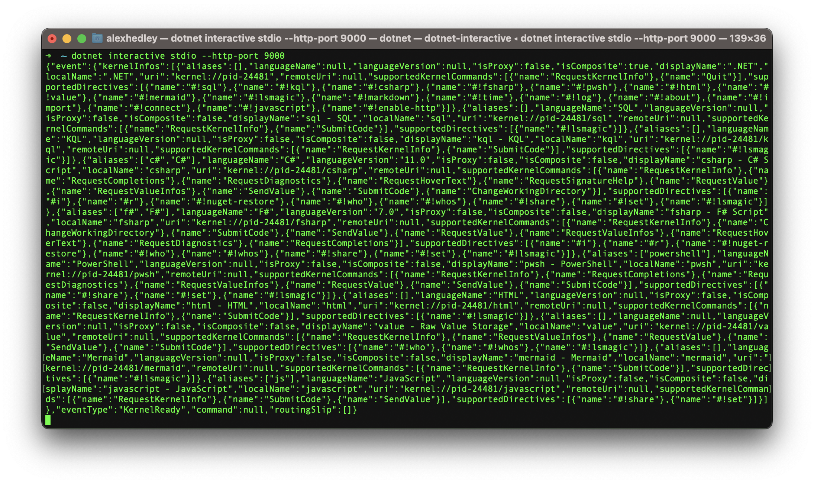
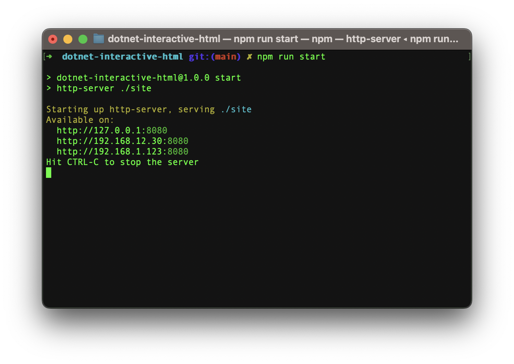
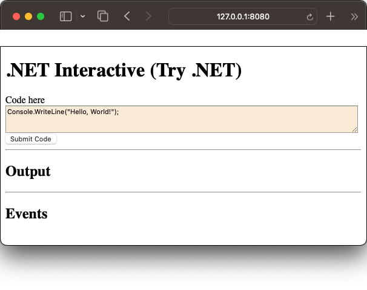
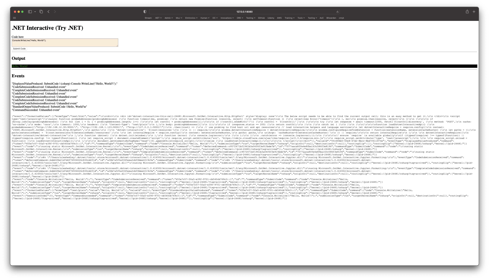
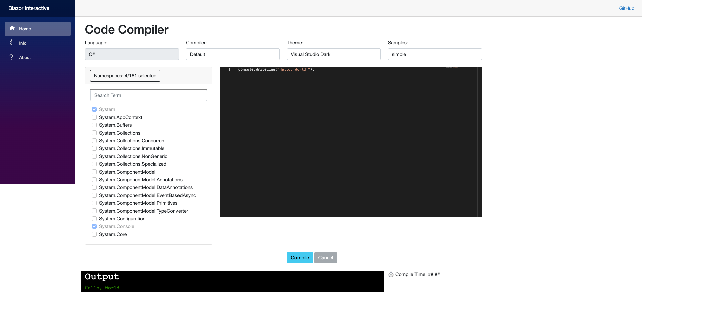
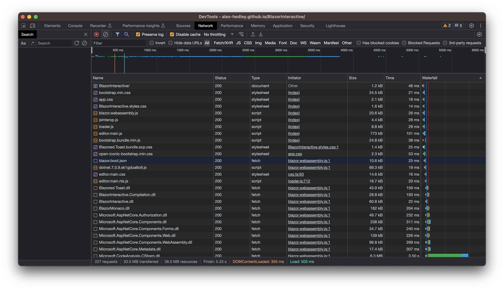
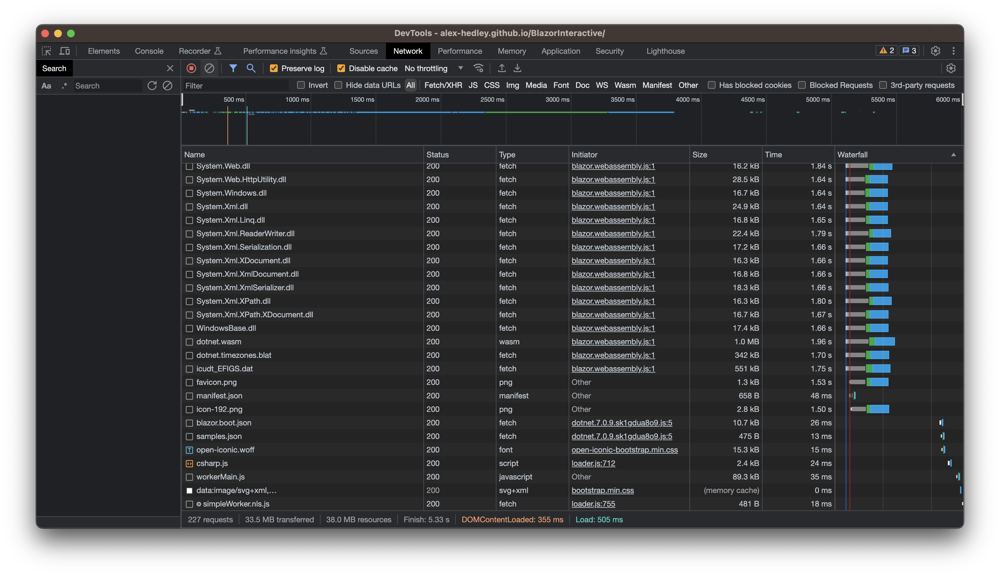
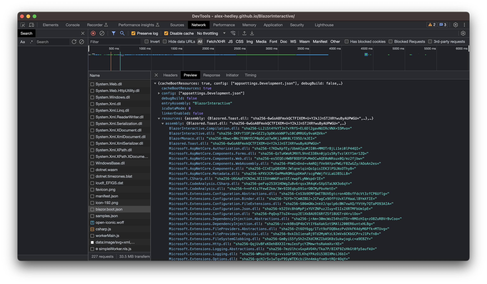
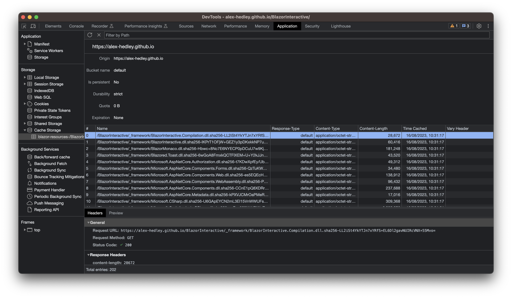

Blazor Interactive
Building a clone of Try.NET (.NET Interactive) in Blazor WASM
Created by Alex Hedley
Slides: https://github.com/alex-hedley/talk-blazorinteractive
Journey

Runnable .NET code on your site
[Documentation] [Code]
.NET Interactive
Install the .NET global tool nuget package. [code]
Command line tool for interactive programming with C#, F#, and PowerShell, including support for Jupyter Notebooks.
Client / Server
.NET Interactive
Demo
.NET Interactive
Install: dotnet tool install --global Microsoft.dotnet-interactive --version 1.0.431302
Run: dotnet interactive stdio --http-port 9000

.NET Interactive
npm run start

open http://127.0.0.1:8080

Some extra HTML/JS code to connect to .NET Interactive.
.NET Interactive
Demo - Events
There are a number of events you can listen for and take action on:
- DisplayedValueProduced
- CodeSubmissionReceived
- CompleteCodeSubmissionReceived
- CodeSubmissionReceived
- CompleteCodeSubmissionReceived
- CodeSubmissionReceived
- CompleteCodeSubmissionReceived
- StandardOutputValueProduced
- CommandSucceeded
.NET Interactive
Demo
What is Blazor Interactive?
A website to write, compile and run code, in the browser.
Think .NET Fiddle.
Run through
The anatomy of Blazor Interactive!
Compilation
CSharpCompilation.CreateScriptCompilation
Journey
%%{init: {'theme': 'dark', 'themeVariables': { 'darkMode': true }}}%%
flowchart LR
A[SyntaxTree] --> E;
B[CompilationOptions]--> E;
C[MetadataReferences] --> E;
D[Name] --> E;
E[Compiler] --> F;
F{Emit} --> G;
G[Assembly] --> H;
H{Create} --> I;
I{Invoke} --> *;
Syntax Tree
Firstly you need to build a SyntaxTree using the code provided.
Compilation Options
Do you want to output a DLL or a Console App?
Also you need to pass a list of usings, prob best to add System as a minimum.
Metadata References
Usually able to get these from the AppDomain.
More on this later...
Publish Trimmed
This was added to the Blazor application .csproj so dlls weren't bundled together and we could make use of them in the list.
<PropertyGroup>
<PublishTrimmed>false</PublishTrimmed>
</PropertyGroup>
Network Requests
Network Requests
blazor.boot.json
This contains a list of the DLLs related to the project.
Cache Storage (Application)
Steps
- Reference Filter (from
blazor.boot.json) - Reference Resolver (Local / Remote)
- Assembly Accessor (Local / Blazor)
- Code Compiler
- Assembly Loader
- Assembly Invoker
%%{init: {'theme': 'dark', 'themeVariables': { 'darkMode': true }}}%%
graph LR;
subgraph Page
A[Reference Filter];
B[Reference Resolver] --> C
C[Compile] --> D
D[Assembly Loader]
subgraph Load
E[Emit] --> F
F[Load]
end
subgraph Invoke
G[Create Instance] --> H
H[Invoke Member]
end
I[Console Display]
end
Upcoming Features
- VB.NET & F# Support
- Stats
- nuget
- IL visualisation
- RoslynQuoter - A Roslyn tool that for a given C# program shows the syntax factory API calls to construct its syntax tree.
Inspiration
Try .NET
Inspiration
.NET Interactive
Inspiration
Experiments
Inspiration
Blazor
Future
@SteveSanderson
- WASI SDK Experimental WASI SDK for .NET Core
- Wasmtime Site
- A fast and secure runtime for WebAssembly
Hacking
Contributors
This has been a team effort!
Thanks to Daniel Doyle (

It's been great to work alongside people to create something, instead of being a lone wolf.